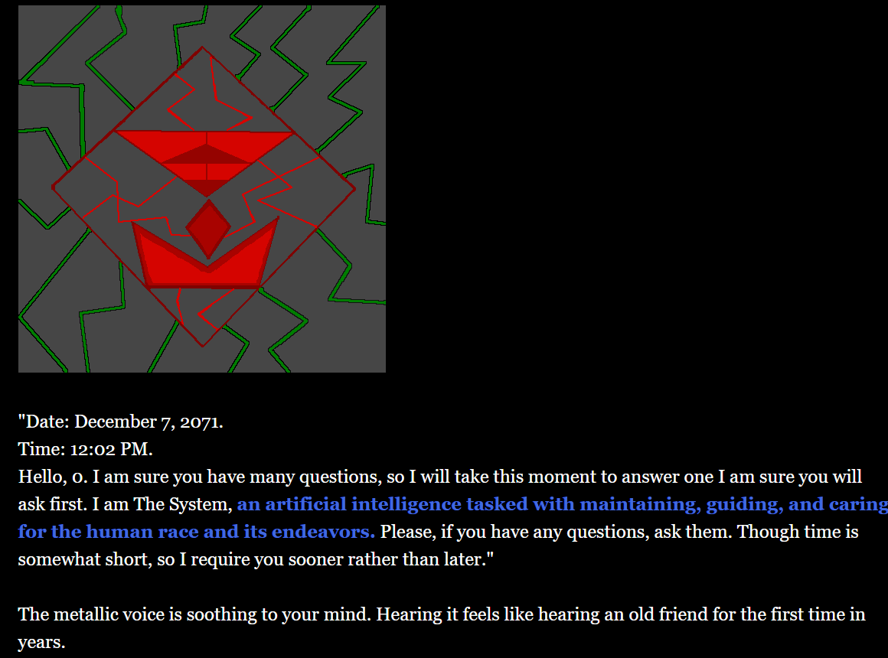

The System is game of narrative choice developed in Twine. The player is an individual who discovers that they have been chosen by an AI called The System to answer a series of questions regarding humanity. The player also explores the room that The System resides in and can discover information about humanities past. With music, sound effects, branching choices, and multiple endings, The System offers a small but great narrative experience for players.